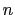
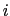
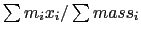

Atom selection is the primary method to access information about the atoms in a molecule. It works in two steps. The first step is to create a selection given the selection text, molecule id, and optional frame number. This is done by a function called atomselect, which returns the name of the new atom selection. the second step is to use the created selection to access the information about the atoms in the selections.
Atom selection is implemented as a Tcl function. The data returned from atomselect is the name of the function to use. The name is of the form atomselect%d where '%d' is a non-negative number (such as 'atomselect0', atomselect26', ...).
The way to use the function created by the atomselect command is to store the name into a variable, then use the variable to get the name when needed.
vmd> set sel [atomselect top "water"] atomselect3 vmd> $sel text waterThis is equivalent to saying
vmd> atomselect3 text
The easiest way of thinking about this is that the atomselect command creates an object. To get information from the object you have to send it a command. Thus, in the example above (atomselect1 num) the object "atomselect1" was sent the command "num", which asks the object to return the number of atoms in the selection. These derived object functions (the ones with names like atomselect3) take many options, as described in section 9.3.2,
For instance, given the selection
vmd> set sel [atomselect top "resid 4"] atomselect4you can get the atom names for each of the atoms in the selection with
vmd> $sel get name N H CA CB C O(which, remember, is the same as
vmd> atomselect4 get name)
Multiple attributes can be requested by submitting a list, so if you want to see which atoms are on the backbone,
vmd> $sel get {name backbone}
{N 1} {H 0} {CA 1} {CB 0} {C 1} {O 1}
and the atom coordinates with
vmd> $sel get {x y z}
{0.710000 4.211000 1.093000} {-0.026000 3.700000 0.697000} {0.541000
4.841000 2.388000} {-0.809000 4.462000 2.976000} {1.591000 4.371000
3.381000} {2.212000 5.167000 4.085000}
Note that the format of the data you get back from the get command depends on how many attributes you requested. If you request only one attribute, as in the get name example above, you will get back a simple list of elements. On the other hand, if you request two or more attributes, you will get back a list of sublists. Specifically, it is a list of size  where each element is itself a list of size  , where is the number of atoms in the selection and is the number of attributes requested.
Your scripts will run faster if you retrieve only one attribute at a time, because then VMD does not have to construct the sublists for each attribute. Remember that in Tcl you can loop over several lists at once using the foreach command:
foreach resid [$sel get resid] resname [$sel get resname] {
# process each resid and resname here
}
One quick function you can build with the coordinates is a method to calculate the geometrical center (not quite the center of mass; that's a bit harder). This also uses some of the vector commands discussed in the section about vectors and matrices, but you should be able to figure them out from context.
proc geom_center {selection} {
# set the geometrical center to 0
set gc [veczero]
# [$selection get {x y z}] returns a list of {x y z}
# values (one per atoms) so get each term one by one
foreach coord [$selection get {x y z}] {
# sum up the coordinates
set gc [vecadd $gc $coord]
}
# and scale by the inverse of the number of atoms
return [vecscale [expr 1.0 /[$selection num]] $gc]
}
With that defined you can say (assuming $sel was created with the previous atomselection example)
vmd> geom_center $sel 0.703168 4.45868 2.43667I'll go through the example line by line. The function is named geom_center and takes one parameter, the name of the selection. The first line sets the variable ``gc'' to the zero vector, which is 0 0 0. On the second line of code, two things occur. First, the command
$selection get {x y z}
is executed, and the string is replaced with the result, which is
{0.710000 4.211000 1.093000} {-0.026000 3.700000 0.697000} {0.541000
4.841000 2.388000} {-0.809000 4.462000 2.976000} {1.591000 4.371000
3.381000} {2.212000 5.167000 4.085000}
This is a list of 6 terms (one for each atom in the selection), and
each term is a list of three elements, the x, y, and z coordinate, in
that order.
The "foreach" command splits the list into its six terms and goes down the list term by term, setting the variable "coord" to each successive term. Inside the loop, the value of $coord is added to total sum.
The last line returns the geometrical center of the atoms in the selection. Since the geometrical center is defined as the sum of the coordinate vectors divided by the number of elements, and so far I have only calculated the sum of vectors, I need the inverse of the number of elements, which is done with the expression
expr 1.0 / [$selection num]
The decimal in "1.0" is important since otherwise Tcl does integer
division. Finally, this value is used to scale the sum of the
coordinate vectors (with vecscale), which returns the new value, which
is itself returned as the result of the procedure.
The center of mass function is slightly harder because you have to get the mass as well as the x, y, z values, then break that up into to components. The formula for the center of mass is 
proc center_of_mass {selection} {
# some error checking
if {[$selection num] <= 0} {
error "center_of_mass: needs a selection with atoms"
}
# set the center of mass to 0
set com [veczero]
# set the total mass to 0
set mass 0
# [$selection get {x y z}] returns the coordinates {x y z}
# [$selection get {mass}] returns the masses
# so the following says "for each pair of {coordinates} and masses,
# do the computation ..."
foreach coord [$selection get {x y z}] m [$selection get mass] {
# sum of the masses
set mass [expr $mass + $m]
# sum up the product of mass and coordinate
set com [vecadd $com [vecscale $m $coord]]
}
# and scale by the inverse of the number of atoms
if {$mass == 0} {
error "center_of_mass: total mass is zero"
}
# The "1.0" can't be "1", since otherwise integer division is done
return [vecscale [expr 1.0/$mass] $com]
}
vmd> center_of_mass $sel
Info) 0.912778 4.61792 2.78021
The opposite of "get" is "set". Many keywords (most notably, "x", "y", and "z") can be set to new values. This allows, for instance, atom coordinates to be changed, the occupancy values to be updated, or user forces to be added. You can also change the resname, segid, and so forth, which may be easier to do within VMD than, for example, editing a PDB file by hand.
set sel [atomselect top "index 5"]
$sel get {x y z}
{1.450000 0.000000 0.000000}
$set set {x y z} {{1.6 0 0}}
Note that just as the get option returned a list of lists, the set option needs a list of lists, which is why the extra set of curly braces were need. Again, this must be a list of size containing elements which are a list of size . The exeception is if is 1, the list is duplicated enough times so there is one element for each atom.
# get two atoms and set their coordinates
set sel [atomselect top "index 6 7"]
$sel set {x y z} { {5 0 0} {7.6 5.4 3.2} }
In this case, the atom with index 6 gets its (x, y, z) values set to 5 0 0 and the atom with index 7 has its coordinates changed to 7.6 5.4 3.2.
It is possible to move atoms this way by getting the coordinates, changing them (say by adding some offset) and replacing it. Following is a function which will do just that:
proc moveby {sel offset} {
foreach coord [$sel get {x y z}] {
lappend newcoords [vecadd $coord $offset]
}
$sel set {x y z} $newcoords
}
And to use this function (in this case, to apply an offset of (x y z)
(0.1 -2.8 9) to the selection "$movesel"):
moveby $movesel {0.1 -2.8 9}
However, to simplify matters some options have been added to the
selection to deal with movements (these commands are also implemented
in C++ and are much faster than the Tcl versions). These functions
are moveby, moveto, and move. The first two take a
position vector and the last takes a transformation matrix.
The first command, moveby, moves each of the atoms in the selection over by the given vector offset.
$sel moveby {1 -1 3.4}
The second, moveto, moves all the atoms in a selection to a
given coordinate (it would be strange to use this for a selection of
more than one atom, but that's allowed). Example:
$sel moveto {-1 1 4.3}
The last of those, move, applies the given transformation
matrix to each of the atom coordinates. This is best used for
rotating a set of atoms around a given axis, as in
$sel move [trans x 90]which rotates the selection 90 degrees about the x axis. Of course, any transformation matrix may be used.
A more useful example is the following, which rotates the side chain atoms around the CA-CB bond by 10 degrees.
# get the sidechain atoms (CB and onwards)
set sidechain [atomselect top "sidechain residue 22"]
# get the CA coordinates -- could do next two on one line ...
set CA [atomselect top "name CA and residue 22"]
set CAcoord [lindex [$CA get {x y z}] 0]
# and get the CB coordinates
set CB [atomselect top "name CB and residue 22"]
set CBcoord [lindex [$CB get {x y z}] 0]
# apply a transform of 10 degrees about the given bond axis
$sidechain move [trans bond $CAcoord $CBcoord 10 deg]